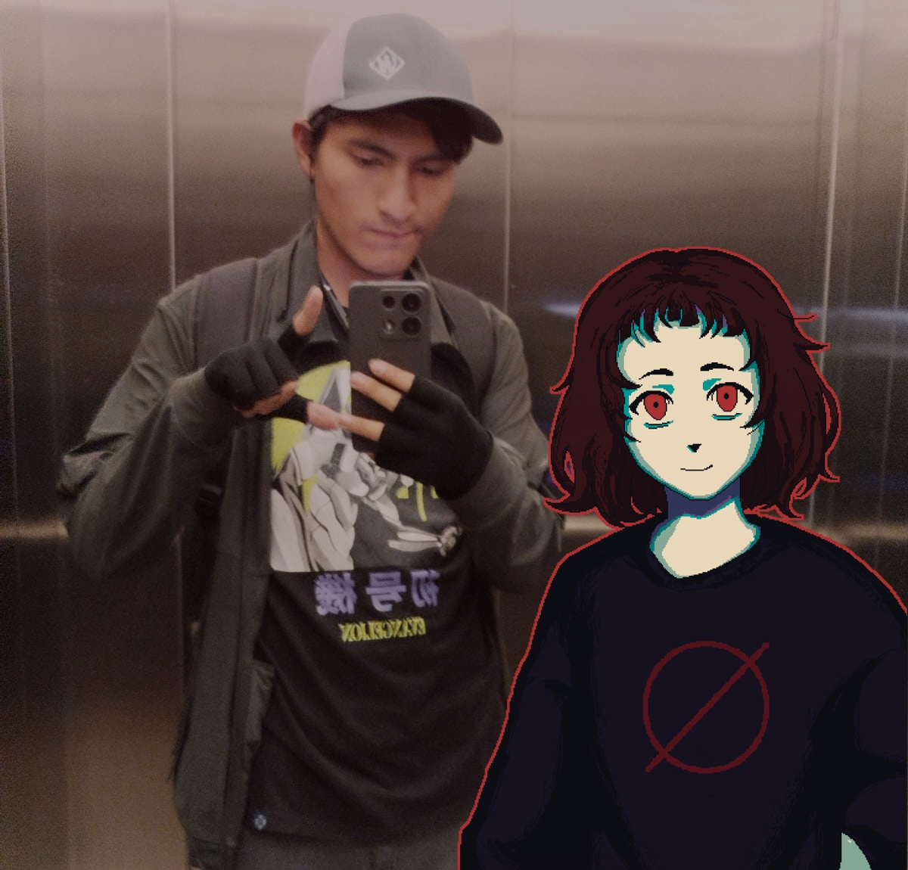

¡Hola! Soy un Sebastian Adriano castillo Carpio un chico de 18 años, nacido el 10 de enero de 2006. Me apasionan la música, los videojuegos, las series animadas y las películas, pero también disfruto muchísimo pasar tiempo con mis amigos. Cada una de estas cosas me inspira y forma parte de quién soy, y siempre estoy buscando nuevas experiencias para compartir y aprender.
Artistas/Bandas Musicales

Películas
Videojuegos